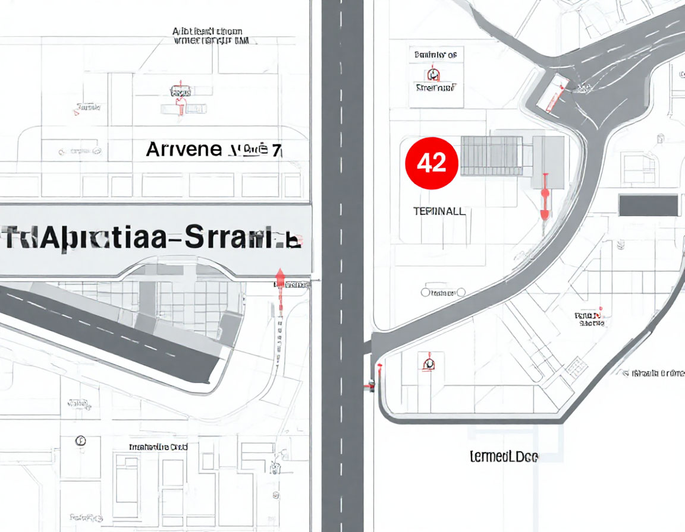
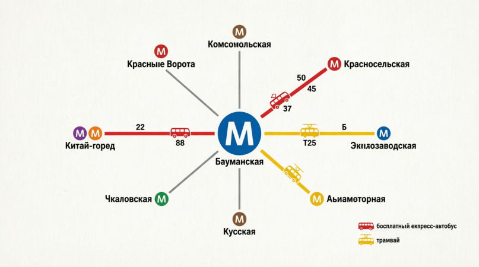
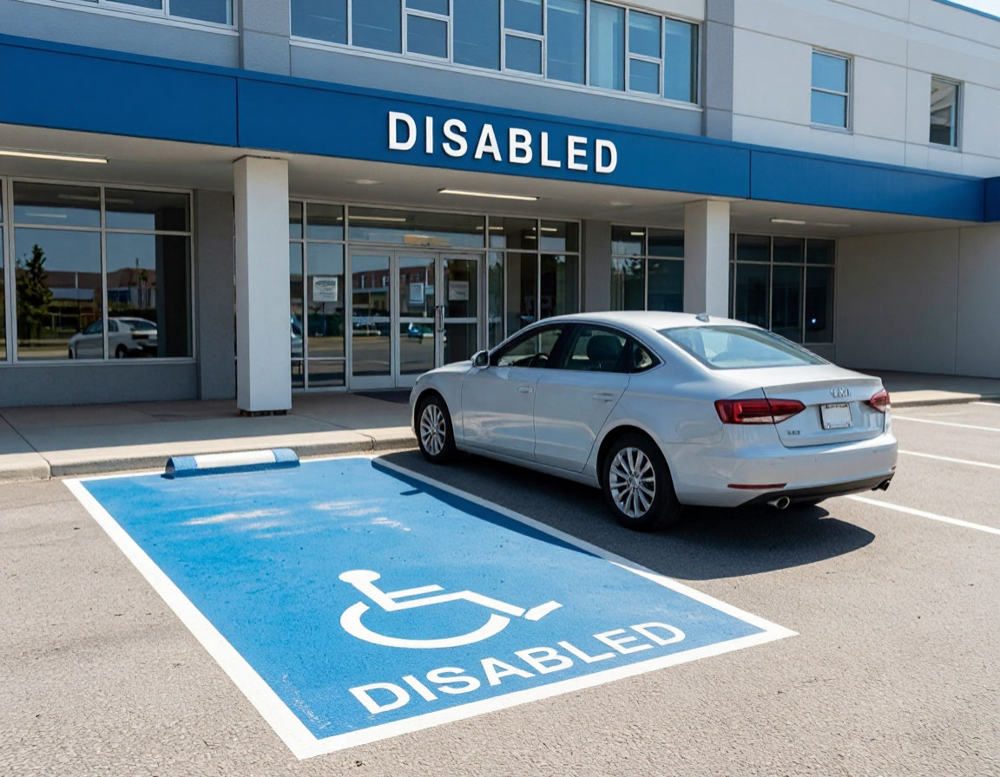

Контакты
Юридический и фактический адрес, справочная служба, горячая линия, схема проезда, реквизиты учреждения.
Адрес и телефоны
Юридический и фактический адрес
105229, город Москва, Госпитальная площадь, дом 3
Вход через КПП №1 и КПП №2.
Справочная служба
+7 (495) 765-43-21
Многоканальный телефон, пн–пт 08:00–20:00
Приёмное отделение (экстренная госпитализация)
+7 (495) 123-45-67
Круглосуточно, без выходных
Регистратура поликлиники
+7 (495) 765-43-40
Пн–пт 08:00–20:00
Горячая линия по качеству медицинской помощи
+7 (495) 111-22-33
Приём обращений согласно 59-ФЗ
Телефон доверия (противодействие коррупции)
+7 (495) 765-00-99
Круглосуточно. Анонимность гарантируется.

Обозначения на схеме
- Корпус №1 — Приёмное отделение, администрация
- Корпус №2 — Хирургический корпус, реанимация
- Корпус №3 — Терапевтический корпус, поликлиника
- Корпус №4 — Диагностический центр (МРТ, КТ, лаборатория)
- Корпус №5 — Отделение реабилитации и физиотерапии
Схема проезда

Общественным транспортом
- Метро: «Бауманская» — 5 мин пешком; «Электрозаводская» — 10 мин пешком.
- Автобус: № 440, 552, т24 — ост. «Госпитальная площадь».
- Трамвай: № 4, 13, 32 — ост. «Госпитальная набережная».

На личном автотранспорте
- Парковка для посетителей: КПП №2, Госпитальная набережная.
- Парковка для инвалидов: 12 машино-мест у входа №1.
Реквизиты учреждения
Основные реквизиты
Полное наименование:Филиал №7 ФГКУ «ГВКГ им. Н.Н. Бурденко» Минобороны России
ИНН:7718012345
КПП:771801001
ОГРН:1037718001234
ОКТМО:45375000
Банковские реквизиты
Банк:ГУ Банка России по ЦФО, г. Москва
БИК:044525000
Расчётный счёт:40101810045250000041
Лицевой счёт:03731012345000001234
График приёма граждан руководством
| Должность | ФИО | День и время | Кабинет | Телефон для записи |
|---|---|---|---|---|
| Начальник филиала | Иванов С.П. | Четверг, 15:00–18:00 | 201 | +7 (495) 765-00-01 |
| Зам. по мед. части | Петрова Е.В. | Вторник, 14:00–17:00 | 205 | +7 (495) 765-00-02 |
| Зам. по АХР | Сидоров А.Н. | Среда, 10:00–13:00 | 207 | +7 (495) 765-00-03 |
| Главная медсестра | Васильева О.Д. | Понедельник, 10:00–13:00 | 110 | +7 (495) 765-00-04 |
Приём ведётся по предварительной записи. При себе иметь паспорт.